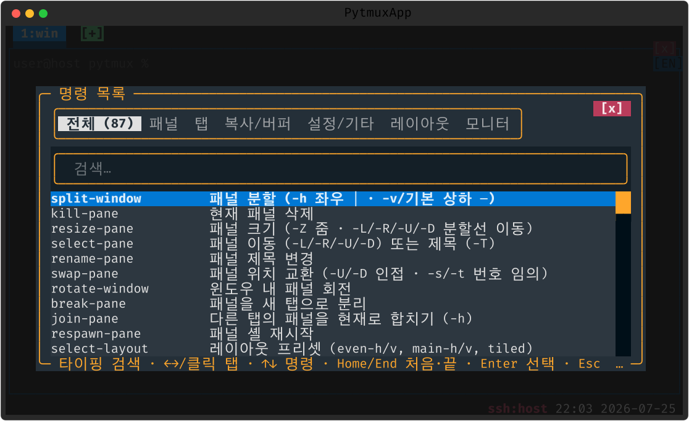

메뉴 · 명령 프롬프트
단축키를 외우지 않아도 됩니다. 메뉴에서 고르거나, 명령 프롬프트에서 검색해 실행하거나, 원하는 키에 명령을 직접 묶을 수 있습니다.
메뉴 (prefix Enter · 우클릭)
패널 위 우클릭 또는 prefix Enter 로 메뉴를 엽니다. 항목은 그룹으로 정리돼 있습니다 — 패널(분할 │/─·줌·회전·swap·새 탭으로 분리·다른 탭에서 합치기·원격 탭 합치기·이름·닫기), 레이아웃(프리셋·다음·저장·불러오기), 탭(새·이름·닫기·핀 토글·트리 개요·다음·이전). 상단에는 스크롤백 검색·명령 입력·⚙ 설정·마우스 도움말이, 구분선 아래에는 detach·서버 종료가 있습니다.
토글 항목(줌·입력 동기화·자동 재개·프롬프트 클리어·핀)은 on/off 를 보여주고, 눌러도 메뉴가 닫히지 않아 연속 조작할 수 있습니다. 플러그인은 자신의 서브메뉴를 끼워 넣을 수 있습니다.

명령 프롬프트 (prefix : · F12)
prefix : 또는 F12 로 명령 프롬프트를 엽니다. tmux 식 명령을 직접 입력하되, 다음 편의 기능이 있습니다.
- 공백 검색 —
clock m→clock-mode처럼 공백으로 토큰을 나눠 후보를 좁힙니다. - ghost 자동완성 — 옵션 템플릿(
-h등)을 흐린 글씨로 미리 보여 줍니다. - 인자 힌트 — 자유 텍스트 인자를 받는 명령은
____로 자리를 표시합니다. - 인자 이력 — ↑↓·Tab 으로 이전에 넣은 인자를 재사용(서버별 영속, 같은 성격의 명령끼리 공유 — 예: 원격 호스트).
- 대상 강조 — 패널 대상 명령은 실행 전 그 패널 테두리를 강조합니다.

전체 명령 목록 (? · help)
명령 프롬프트에서 ?(별칭 help·commands·list-commands)를
입력하면 카테고리로 묶인 전체 명령 목록이 열립니다. 대표 명령을 영역별로 추리면 다음과 같습니다.
| 영역 | 주요 명령 |
|---|---|
| 패널 | split-window · select-pane · resize-pane · swap-pane · rotate-window · break-pane · join-pane · select-layout · synchronize-panes · kill-pane |
| 탭 | new-tab · select-tab · move-tab · swap-tab · rename-tab · pin-tab · choose-tree · kill-tab |
| 복사·버퍼 | capture-pane · clear-history · paste-buffer · choose-buffer · send-keys · pipe-pane |
| 레이아웃 | save-layout · restore-layout · layout-save · layout-load · layout-list |
| 세션·서버 | detach-client · kill-server · restart-server · restart-all · restart-check · reconnect |
| 원격 | remote-attach · remote-new-tab · remote-detach · merge-remote-tab |
| 설정·기타 | settings · set · bind-key · list-keys · display-popup · plugins · lang · version |

키 바인딩
키는 세 갈래로 처리됩니다 — ESC 모드(한 번의 ESC 또는 백틱 ` 뒤), prefix 표(prefix 뒤), 그리고 사용자 바인딩입니다.
ESC 모드 — 짧게 자주 쓰는 것
| 키 | 동작 |
|---|---|
| ←↑↓→ | 패널 포커스 이동 |
| 1–9 | 번호로 탭 전환 |
| Tab | 탭 스위처 — 목록에서 Tab 다음 · Shift+Tab 이전으로 고르고 Enter 전환(Esc 취소). 원격 탭=분홍·핀=* 경고색, 패널 2개 이상 탭엔 패널 줄(Enter 로 그 패널로), Home/End/PgUp/PgDn·↑↓ 순환 지원 |
| n / p / P | 새 탭 / 상하 분할 / 탭 핀 토글 |
| e | 활성 패널에 ESC 전송 |
| Insert / Shift+Delete | 작성창(블록 선택 편집 → 주입) · Shift+Delete 는 Insert 키 없는 맥 키보드용 |
| Ctrl+↑ / Ctrl+↓ | 이전 / 다음에 입력한 프롬프트 위치로 점프(Claude 패널) |
| : / ? | 명령 프롬프트 / 도움말 |
| ESC | 모드 종료(앱에 ESC 안 보냄) |
prefix 표 — 대표 키
| 키 | 동작 |
|---|---|
| % / " | 좌우 / 상하 분할 |
| z / o / ; | 줌 토글 / 다음 패널 / 최근 패널 |
| { / } / Ctrl-o | 패널 swap(이전/다음) / 회전 |
| ←↑↓→ / H J K L | 포커스 이동 / 크기 조절 |
| c / , / & | 새 탭 / 이름 변경 / 탭 닫기 |
| n p l w | 다음/이전/최근 탭 · 트리 개요 |
| P / ! | 탭 핀 토글 / 패널을 새 탭으로 분리 |
| [ / ] / = | 스크롤 모드 / 붙여넣기 / 버퍼 고르기 |
| t / R / r | 시계 토글 / 자동 재개 토글 / 화면 다시 그림 |
| d / Enter / : | detach / 메뉴 / 명령 프롬프트 |
내 키에 명령 묶기
bind-key <키> <명령>(별칭 bind) 으로 런타임에 키를 묶습니다.
-n 을 붙이면 prefix 없이 바로 듣는 루트 바인딩이 됩니다(F1–F11·M-
키 권장 — 매칭된 키는 셸로 전달되지 않음). 해제는 unbind-key(-a 전부).
현재 바인딩과 마우스 제스처는 list-keys(별칭 lsk) 팝업에서 봅니다.
설정 파일에도 bind | split-window -h 처럼 적어 둘 수 있습니다(자세한 내용은
13. 설정 파일).